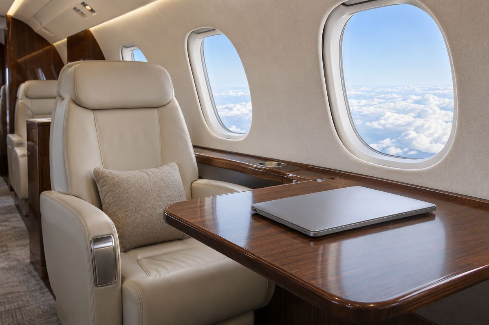

항공 / EXPLAINED
카타르 이그제큐티브, G700·G650ER 전 기체에 스타링크 설치 완료
카타르항공그룹의 전세기 부문이 초장거리 걸프스트림 기단의 위성 인터넷 개조를 마쳤다.

카타르 이그제큐티브가 걸프스트림 G700과 G650ER 초장거리 기단 전체에 스타링크 와이파이를 설치했다고 11월 12일 발표했다. 회사는 두 기종에서 서비스가 제공된다고 밝혔다. 12일은 설치 완료를 공개한 날이며, 마지막 기체에서 작업을 끝낸 시각이나 개별 기체의 첫 서비스 날짜는 자료에 없다. 여행자가 이번 소식을 예약에 적용할 때는 먼저 실제 배정 기종을 확인해야 한다.
카타르 이그제큐티브는 카타르항공그룹의 전용기 전세 사업 부문이다. 정해진 시간표에 따라 좌석을 파는 여객편과 운영 방식이 다르다. 회사가 설명하는 유동 기단 방식에서는 수요가 있는 지역으로 항공기를 재배치한다. G700과 G650ER는 장거리 논스톱 임무를 수행하는 비즈니스 제트다. 기종별로 장비가 통일되면 같은 두 기종 안에서 기체가 바뀔 때 인터넷 설비가 달라질 가능성을 줄일 수 있다는 것이 편집부의 해석이다.
객실 와이파이에는 두 연결이 있다. 노트북이나 휴대전화가 객실의 무선망에 붙고, 항공기에 장착한 위성 단말이 외부 네트워크로 데이터를 보낸다. 스타링크가 사용하는 저궤도 위성은 정지궤도 위성보다 지구에 가깝다. 전파가 오가는 거리가 짧아지면 신호가 왕복하는 데 걸리는 시간을 줄일 수 있다. 화상 회의에서는 파일을 받는 속도와 별개로 상대방의 말에 반응이 얼마나 늦게 돌아오는지도 중요하다.
회사는 설치 대부분을 카타르 이그제큐티브 엔지니어링과 카타르항공 정비 조직이 자체 수행했다고 설명했다. MRO는 항공기의 유지보수·수리·정비를 뜻한다. 외부 안테나를 달고 객실 장치와 연결하는 개조는 좌석에 공유기를 하나 추가하는 일과 다르다. 전력과 배선, 안테나의 설치 위치, 운항에 필요한 승인 조건이 맞아야 한다. 이번 발표에는 기체별 개조 기간이나 부품 비용이 나오지 않았다.
전세 고객에게는 장시간 비행 중 회의나 메시지 전송을 계획할 근거가 하나 늘었다. 다만 회사가 설명한 낮은 지연과 넓은 서비스 범위는 노선마다 측정한 보장 수치로 공개되지 않았다. 같은 항공편에서도 동시에 접속한 기기 수나 비행 경로, 위성망의 상태에 따라 체감이 달라질 수 있다. 놓치기 어려운 업무라면 기내 접속 가능 구간과 이용 조건을 예약 담당자에게 확인하고, 연결 없이 열 수 있는 자료도 준비하는 편이 현실적이다.
위성이 보이는 곳과 서비스가 허용되는 곳도 구분할 필요가 있다. 스타링크의 항공 서비스 안내는 국제 수역을 포함한 위성망 범위를 설명하는 한편, 항공기 이동 중 서비스가 허가된 국가를 별도로 안내한다. 기술적으로 위성 신호를 받을 수 있어도 모든 공역에서 같은 조건으로 이용할 수 있다는 근거는 아니다. 출발지나 도착지의 허가 범위가 중요하다면, 예약 시 항공사에 비행 경로와 지상 연결 가능 여부를 함께 문의하는 것이 해당 여정의 답에 가깝다.
같은 발표에 나오는 카타르항공 여객기 170대는 그룹 정기편의 별도 스타링크 설치 실적이다. 전세기 G700과 G650ER의 수량을 뜻하지 않는다. 공개 자료가 확인해 주는 범위는 두 초장거리 기종의 설치 완료다. 다른 전세 기종에 장비가 언제 적용될지, 각 기체에서 어떤 속도를 낼지는 아직 공개되지 않았다.